14 October 2026 · CPU · VortexPasta 0.34.19 · Julia 1.13.1
34 runs have completion records, totaling 56.1 summed in-process minutes, including startup inside the driver. Two simulation processes at most ran concurrently, each with 2 Julia threads and 1 BLAS/OpenMP thread. The directory currently occupies about 100 MiB. Peak measured resident memory was 1.29 GiB per process; the longest individual run took 8.94 minutes. The summed simulation time stayed near the initial one-hour budget, although the Hopf family of targeted checks exceeded the initial 20-minute per-configuration aim. Full per-run and batch resource records are retained in analysis/costs.json and *_resources.txt. Pilot, preliminary, accuracy-corrected, prepared-centerline, and numerical-check runs are named separately. Every completed run retains its final checkpoint; failed setup and plotting attempts retain logs. No remote jobs or GPE simulations were launched.
The circular ring passes a stringent propagation and conservation check. Slender-core Hopf and trefoil filaments reconnect, giving respectively one and two loops. Their event timing, removed length, and post-reconnection helicity retain numerical and reconnection-model sensitivity. Wider-core GPE-convention trajectories do not reproduce the retained GPE reconnection dynamics; later node growth and artificial fragmentation limit their interpretation. These calculations demonstrate geometry and numerical behavior, not reproduction of phonon emission or the paper’s late helicity decay.
At a=0.001, the periodic propagation speeds are 1.3684481379 (64 nodes) and 1.3684490764 (128 nodes), relative difference 6.86e-07. Halving the timestep gives 1.3684481379. The 64-node maximum relative changes are length 5.05e-11, energy 5.95e-11, normalized impulse 1.46e-14; max |H|/Gamma²=3.15e-15. Transverse centroid drift is 6.04e-15; maximum best-plane RMS departure is 1.23e-06. Tiny fourfold deformation is consistent with the periodic image field.
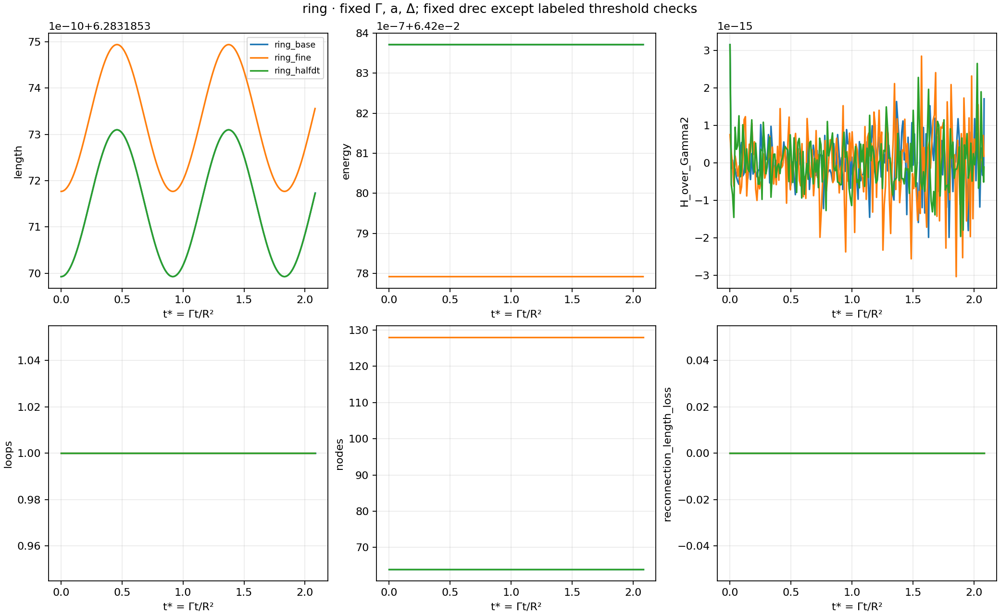
Physical time t; multiply by Gamma=2.0826013773 for t*. base: 0.615954; fine: 0.622072; halfdt: 0.615650; d060: 0.622323; d100: 0.608691. Timing brackets are one accepted step, not physical uncertainty estimates.
Physical time t; multiply by Gamma=2.0826013773 for t*. base: 0.361356, 0.361842, 0.365641; fine: 0.370313, 0.372093, 0.373140; halfdt: 0.361168, 0.361788, 0.365468; d060: 0.363883, 0.365764, 0.368374; d100: 0.361356, 0.361842, 0.365641. Timing brackets are one accepted step, not physical uncertainty estimates. Different event indices are matched by spatial site in validation_checks.json. Doubling nodes changes the trefoil spatial order from coarse sites 1–2–3 to 3–2–1. Neither node count is divisible by three, so sampling does not preserve exact threefold symmetry; the serial algorithm also orders nearby cuts. No physically preferred order or exact simultaneity is established.
The periodic cube has side 2π, R=1, rho=1, and Gamma=2.0826013772617338. These are local baseline choices, not verified original paper inputs. Full Ewald Biot–Savart dynamics, RK4, zero imposed flow, zero mutual friction, and NoDissipation are used. The slender control has a=0.001 (R/a=1000). Exploratory wider-core runs use a=0.1171875 and Delta=0.615 because the installed package explicitly documents this asymptotic GP healing-length convention. This is not a fitted core radius. A hollow-core Delta=0.5 would require a different radius to give the same logarithmic constant. R/xi=8.5333 in GHOST, and local curvature and strand separations become comparable to the core: the thin-filament approximation is then uncontrolled.
The documented unbounded prediction is U=Gamma[ln(8R/a)-Delta]/(4πR), E/rho=Gamma²R[ln(8R/a)-Delta-1]/2. The final benchmark tests both core choices and both node counts. At 128 nodes, slender unbounded speed is 1.3875083745 versus 1.3875087059 predicted; periodic speed is 1.3684490764. For the wider core, unbounded speed is 0.5980167057 versus 0.5980170436 predicted; periodic speed is 0.5789574077. The periodic correction is about -0.0190593, and must not be mistaken for core error. Existing GPE ring inputs instead have c=1, xi=0.3, Gamma=2.6657297628950194; they cannot calibrate the c=2, xi=0.1171875 cases. No compatible GPE ring calibration was available.
The single ring is centered at (π,π,π), with counterclockwise xy orientation. The Hopf circles follow the actual GHOST initializer: (π-1/2+cos s,π+sin s,π) and (π+1/2+cos s,π,π+sin s). Their linking number is approximately -1; positive circulation follows increasing s. The trefoil is exactly the requested analytic curve. Installed TrefoilKnot has the same signs and is scaled by 1/3, translated by π, and kept at orientation +1; a 1001-point evaluation agrees within 1.34e-15. Known circle and trefoil controls give determinants 1 and 3. Three generic trefoil projections have three-crossing diagrams and determinant 3, establishing a trefoil here; determinant alone is not a general knot classifier. Both configurations have negative chirality in the retained GHOST convention; signs are never reversed for visual agreement.
GHOST case 05 has no completed results. Cases 04 and 06 have return code 0, matching parameter hashes, retained final t=10 fields, and histories reaching t=10. Their c, xi, rho, and circulation were checked from actual inputs. Prepared t=0 curves were reused from retained NPZ caches, and independently retraced from the hash-verified imported wavefunctions using the existing oriented plaquette/bilinear-root tracer at 128³ interpolation. Both traces are closed and unambiguous. Arclength resampling produces the prepared VFM input CSVs. Preparation changes geometry; analytic and prepared initializations are separately labeled in all comparisons. The older VortexPasta ring has diagnostics through t=10.00003; the coplanar two-ring case has snapshots only through t=0.00618842 and no diagnostic/completion record proving its endpoint. It is unlinked and is not reused as a Hopf input. Existing GPE results and diagnostic limitations are retained, including the initial trefoil native-volume versus Eq. 8 line-helicity discrepancy.
Initial node counts are 64 per ring and 128 for the trefoil, doubled in spatial checks. Dense analytic curves or retained prepared curves are resampled approximately uniformly in arclength. Quintic splines and adaptive segment-length refinement enforce nominal bounds 0.65h to 1.4h, where h is the smallest initial segment. Actual segment bounds, curvature, and node counts are recorded throughout. All final checks use Fourier mesh 48³, Ewald beta=4.5, Gaussian quadrature order 10, NUFFT oversampling 1.5/support 6, and LIA segment fraction 0.2. These are accuracy controls distinct from the GPE grid and filament nodes. The 64³/beta=5/quadrature-12 reference differs by order 10^-9 in velocity on tested initial geometries; representative pre/post-event and evolved snapshots remain below 1e-8 relative velocity difference. Ewald/quadrature error is therefore much smaller than the observed filament-resolution effects in these tests. Preliminary quadrature-4 runs had order 10^-4 velocity errors and are explicitly superseded. Timesteps combine a 0.001 cap, node-displacement cap, and 0.25 times the thin-core Kelvin period. Half-step tests halve all three caps. The thin-core Kelvin formula becomes invalid for wider cores; those exploratory runs use displacement and fixed-step caps only. Wide fine tests also reduce dt to 0.00025 and are not a pure spatial comparison; separate coarse dt/2 tests expose that limitation.
ReconnectFast is used with fixed physical distance 0.08 in the baseline and both spatial resolutions; 0.06 and 0.10 test its sensitivity. Thus the threshold is not silently scaled with node spacing. The implementation first screens node distances, considers straight local segments, rejects adjacent/two-neighbor pairs, requires approaching velocities and decreasing segment length, and accepts antiparallel or sufficiently misaligned segments (cos_max=0.97). Serial ordering is used, with up to two scans per step; multiple events can occur on one filament, and scan order is not a simultaneous multi-site solution. A read-only hook records each actual accepted event’s location, bracketing timestep, and local segment-length change. The installed package is unchanged. Total length can change through resolved stretching even without dissipation. Adaptive node insertion/removal and disappearance of unresolved small loops are tracked separately; signed refinement loss can be negative when interpolation adds length. The short operation replays measure energy before/after reconnection and refinement at the same advected geometry, separating numerical changes from smooth evolution. The straight-edge length-loss counter is not the same as the change in integrated spline length: trefoil reconnection reinterpolation can increase the latter despite a decreasing local edge sum. The operation replays measured total E/(rho V) changes of -0.00039008 from the Hopf cut, and -0.000145075 from the three trefoil cuts; trefoil refinement in the short replay added 0.000103862. These are operator-induced changes, not physical dissipation. No loss here is labeled sound radiation. For the Hopf checks, the distance thresholds 0.06/0.08/0.10 give first events at approximately 0.62232/0.61595/0.60869; dt/2 gives 0.61565, while doubled spatial resolution gives 0.62207. Thus timing is more sensitive to spatial/reconnection choices than to timestep in this interval.
| Run | Actual final t | First event times | Final loops | Max nodes | Reconnection ΔL loss | Signed refinement ΔL loss |
|---|---|---|---|---|---|---|
| hopf_base | 1.20002 | 0.615954 | 1 | 147 | 0.0648696 | -0.00394182 |
| hopf_fine | 1.20007 | 0.622072 | 1 | 295 | 3.6859e-05 | -0.0106245 |
| hopf_halfdt | 0.800094 | 0.615650 | 1 | 143 | 0.0627659 | -0.00253593 |
| hopf_d060 | 0.80028 | 0.622323 | 1 | 144 | 0.112801 | 0.0282026 |
| hopf_d100 | 0.800005 | 0.608691 | 1 | 142 | 0.0175118 | -0.00340911 |
| trefoil_base | 0.80014 | 0.361356/0.361842/0.365641 | 2 | 154 | 0.00297689 | 0.0978184 |
| trefoil_fine | 0.500009 | 0.370313/0.372093/0.373140 | 2 | 300 | 0.00570376 | 0.0519949 |
| trefoil_halfdt | 0.500068 | 0.361168/0.361788/0.365468 | 2 | 150 | 0.000675079 | 0.0610286 |
| trefoil_d060 | 0.500168 | 0.363883/0.365764/0.368374 | 2 | 149 | 0.0386775 | 0.0224909 |
| trefoil_d100 | 0.500107 | 0.361356/0.361842/0.365641 | 2 | 150 | 0.00297689 | 0.0398493 |
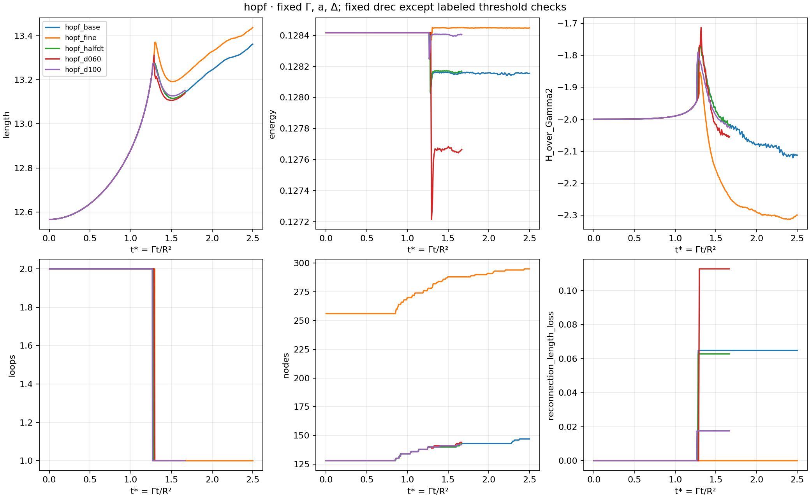
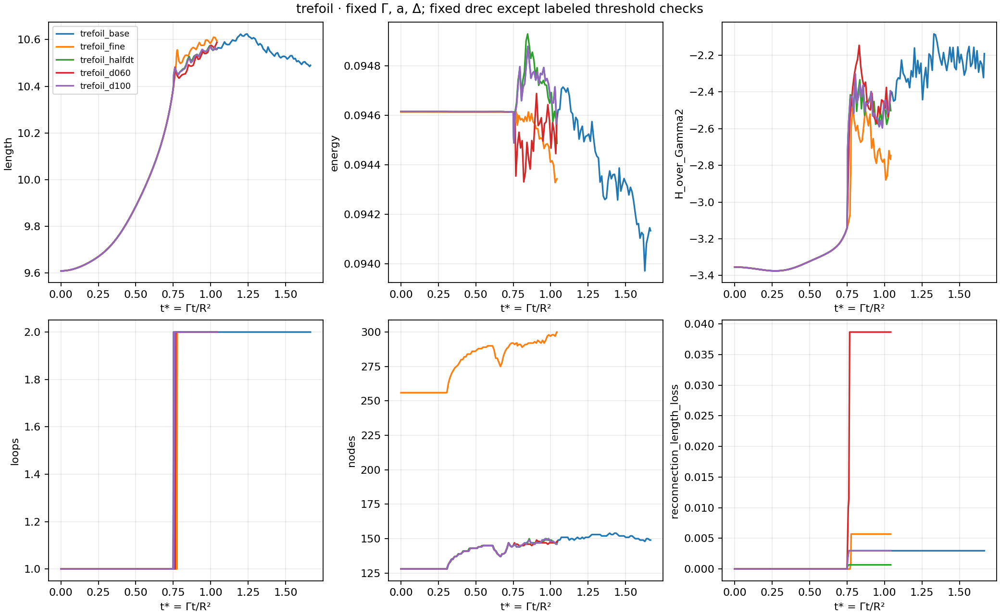
The native VFM diagnostic is H=Gamma integral(v_BS·ds), reported as H/Gamma². Geometric centerline helicity is sum(Wr)+2 sum(Lk), with linking and writhe tracked separately. Neither includes an independently evolved ribbon-twist degree of freedom; it is not Hänninen’s full Seifert-framed helicity. Curves are unwrapped continuously with periodic differences, checked for zero periodic winding and absence of integer linking with the 26 nearest periodic copies at representative endpoints, and aligned to a common lift for compact-loop Gauss integrals. Time-history Gauss sums use 384 samples per loop and are checked at 768 at endpoints. An independent exact straight-segment solid-angle calculation is further checked at 384/768/1536 samples of the interpolated exported curves, with a skew-segment numerical-quadrature control. It gives final Hopf centerline helicities -2.11413 (coarse) and -2.30063 (fine), versus native -2.11261 and -2.30047; the spatial difference remains. Trefoil reconstruction/diagnostic disagreement is larger and remains unresolved; near reconnection the geometric and velocity diagnostics can differ due to insufficient filament resolution and close-strand quadrature. Minimum nonadjacent segment distance excludes two neighboring sampled segments; candidate nonlocal strands additionally exclude arclength separations below one-sixth of a loop. Curvature is the nodal spline maximum. Time is reported as physical t and t*=Gamma t/R²; U*=UR/Gamma, length*=length/R, E*=V E_native/(Gamma²R), and impulse*=I/(rho Gamma R²). The package returns normalized impulse I/(rho Gamma), and energy per mass E_total/(rho V). GPE total projected energy includes compressible and core-density contributions absent from VFM, so absolute energies are not equated.
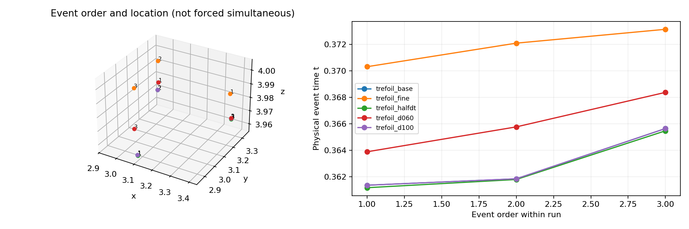
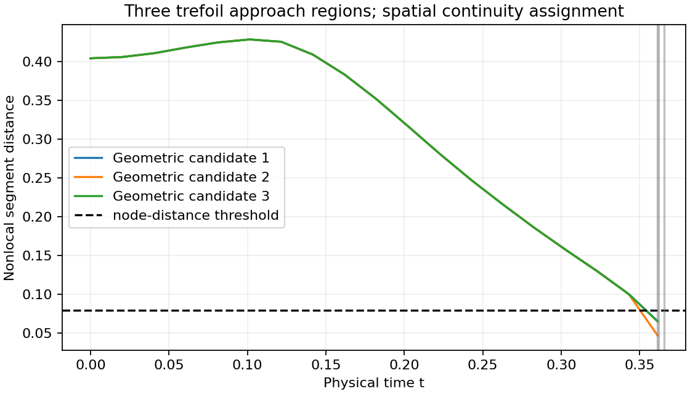
Over common comparison windows, doubling filament resolution changes H/Gamma² by up to 0.223 for the Hopf link and 0.589 for the trefoil. Corresponding coarse dt/2 maxima are 0.0116 and 0.1049. Before the first event, coarse/fine helicity differences remain below about 1.5e-5 (Hopf) and 4.9e-4 (trefoil). Thus the main uncertainty develops through and after the reconnection operation; post-event helicity is not converged. The threshold tests are model-sensitivity measurements, not a claim that a unique physical reconnection distance has been determined.
The prepared wide-core trajectories use the correct initial geometry and GP asymptotic core convention, but the broad core is not a controlled filament limit. Their failure to reproduce GPE timing is meaningful disagreement, not evidence that reconnection should be forced. The preliminary prepared Hopf run develops 72 imposed events and 36 loops by t≈2.5 as node growth accelerates; this is numerical/model breakdown, not a credible counterpart of the GPE trajectory. The fine/prepared and half-step runs test earlier intervals. The coarse/fine prepared Hopf runs both stay linked through t=2.1, with minimum nonlocal strand separation about 0.110, comparable to xi=0.1171875; the nominal filament criterion drec=0.08 has not been reached. This exposes the core-overlap/reconnection-model gap without retuning the threshold to GPE timing. The prepared slender trefoil has an additional fourth event near t=0.55932 and deletes one unresolved loop of straight-edge length 0.14572; by t=0.8 its signed refinement length loss is 0.25173 and energy deviation reaches 2.73%. Those are numerical losses requiring finer checks. The analytic slender controls capture the expected topology changes, but change the physical core scale. Agreement of some plots therefore establishes neither quantitative GPE agreement nor convergence of post-event helicity. Retained GPE trefoil reconnections near t=0.387 are themselves wider-core local results, not the original paper’s full-resolution simulation.
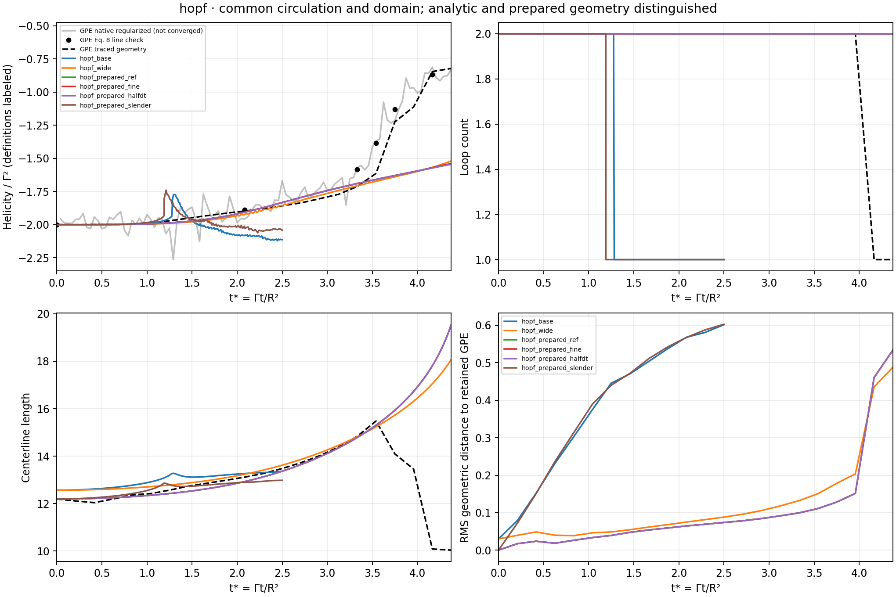
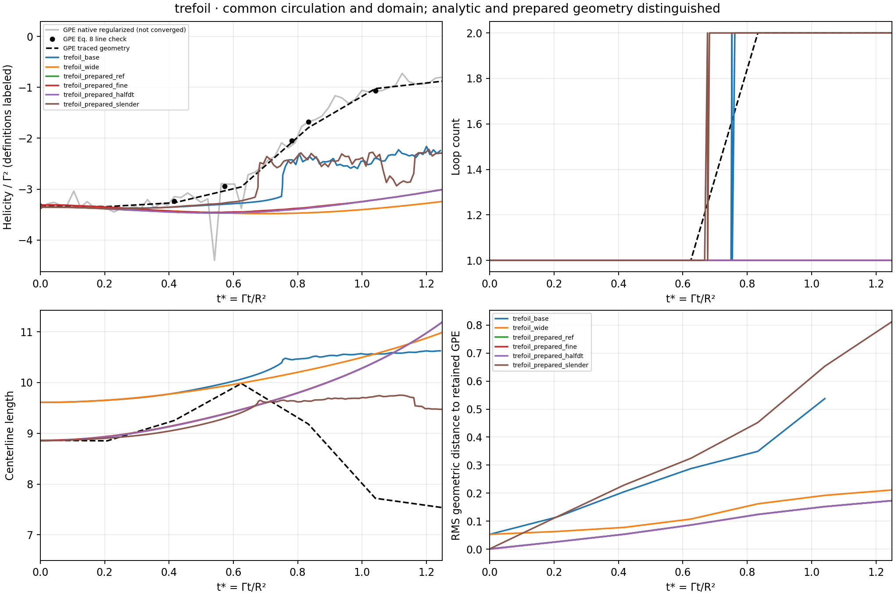
The baseline animations show physical t and t*. The ring is shown in laboratory coordinates; knot/link movies use a clearly labeled comoving view. The analysis removes center translation and the best-fit plane tilt, then decomposes radial and axial centerline displacement into azimuthal modes where the projection winds monotonically. Only modes with at least eight original filament nodes per wavelength are retained. Low modes are large-scale deformation; their amplitudes and relative phases are recorded separately. Nonplanarity and resolved helical components support a disturbed centerline. They do not establish a dispersion relation, broadband cascade, phonon radiation, or the paper’s GPE density spectrum. Mode information beyond the resolved filament scale is not physically interpretable. The strongest next experiment is a compatible prepared GPE single ring with the same c, xi, Gamma and domain, followed by a thinner-core GPE knot/link comparison and finer VFM reconnection-distance study; this work did not launch that GPE experiment.
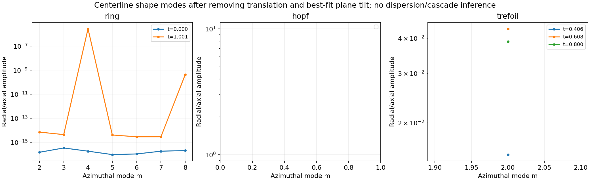
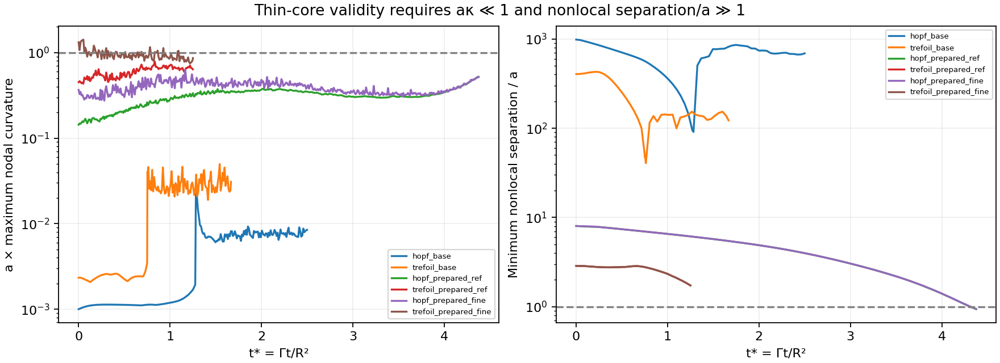
Clark di Leoni, Mininni & Brachet (PRA 94, 043605, 2016) uses GPE and reports topology-dependent helicity behavior and Kelvin/sound signatures. Its published knot simulations use 256³, not the retained local 64³ adaptations. Hänninen, Hietala & Salman (Scientific Reports 6, 37571, 2016) distinguishes centerline helicity from twist-inclusive framing; its Figure 4 trefoil is at zero temperature, while Figure 5 Hopf reconnection uses enlarged cores and alpha=1. That friction is not adopted here. Ricca, Samuels & Barenghi (JFM 391, 1999) compares full Biot–Savart and LIA knot dynamics and stresses thin-filament scale separation. Maggioni et al. (PRE 82, 026309, 2010) examines velocity, energy and writhe/twist of different torus geometries; its slender-core dimensional parameters are not copied as GPE parameters.
Target PRA paper · Hänninen et al. · Ricca et al. · Maggioni et al.
The pinned Project.toml and Manifest.toml were copied into this new directory; no package upgrade was performed. Run ./run.sh inputs/NEW_CASE.toml after copying a saved configuration and changing its name. Existing run directories are refused. Use python3 batch_analysis.py, compare.py, extra_analysis.py, validation.py and report.py for derived products. prepare.py reuses retained GHOST fields and caches; reference tracing/knot code is copied under reference_tools. Julia benchmark_final.jl checks ring conventions and checkpoint continuation. audit_operations.jl performs the short operation-budget runs. Each run has configuration, diagnostics, event list, sparse curves, restart checkpoints, and completion status. The analysis/provenance.json source-group mapping is authoritative for the two early batches, whose original driver copied the on-disk source while code was being improved; exact loaded source versions were preserved separately. Later runs capture source at process startup. restart.jl is an optional geometry/clock restart helper and resets cumulative counters; use the load_checkpoint API demonstrated and executed in benchmark_final.jl when exact solver-state/counter continuity is required. The geometry-only restart helper has not been executed as a separate production run; only the exact-state checkpoint continuation test is claimed as validated. A run’s actual final time can exceed its requested endpoint by one accepted step, and that actual time appears everywhere.
Detailed launch and restart instructions · Executed validation checks · Runtime, memory and output costs · Reconnection/refinement energy accounting · Independent writhe diagnostic check · Final artifact provenance · Artifact checksums
| Run | Core a | Initial input | Final t | Status | Seconds | Final nodes | Recon. |
|---|---|---|---|---|---|---|---|
| hopf_base | 0.001 | hopf_64.csv | 1.20002 | complete | 96.8222 | 147 | 1 |
| hopf_d060 | 0.001 | hopf_64.csv | 0.80028 | complete | 68.0131 | 144 | 1 |
| hopf_d100 | 0.001 | hopf_64.csv | 0.800005 | complete | 54.27 | 142 | 1 |
| hopf_fine | 0.001 | hopf_128.csv | 1.20007 | complete | 368.079 | 295 | 1 |
| hopf_halfdt | 0.001 | hopf_64.csv | 0.800094 | complete | 108.864 | 143 | 1 |
| hopf_operation_audit | 0.001 | hopf_operation_audit.csv | 0.618279 | complete | 12.1961 | 140 | 1 |
| hopf_pilot_v2 | 0.001 | hopf_64.csv | 0.100736 | complete | 2.21017 | 128 | 0 |
| hopf_prepared_fine | 0.117188 | hopf_prepared_128.csv | 2.1 | complete | 536.251 | 418 | 0 |
| hopf_prepared_halfdt | 0.117188 | hopf_prepared_64.csv | 2.1005 | complete | 186.078 | 210 | 0 |
| hopf_prepared_ref | 0.117188 | hopf_prepared_64.csv | 2.101 | complete | 110.17 | 210 | 0 |
| hopf_prepared_slender | 0.001 | hopf_prepared_64.csv | 1.20027 | complete | 95.2013 | 146 | 1 |
| hopf_prepared_wide | 0.117188 | hopf_prepared_64.csv | 2.50016 | complete | 77.035 | 1138 | 72 |
| hopf_slender | 0.001 | hopf_64.csv | 2.00034 | complete | 70.8481 | 148 | 1 |
| hopf_wide | 0.117188 | hopf_64.csv | 2.501 | complete | 54.6797 | 533 | 0 |
| ring_base | 0.001 | ring_64.csv | 1.00074 | complete | 54.7407 | 64 | 0 |
| ring_fine | 0.001 | ring_128.csv | 1.00009 | complete | 144.892 | 128 | 0 |
| ring_halfdt | 0.001 | ring_64.csv | 1.00032 | complete | 72.8217 | 64 | 0 |
| ring_pilot_v2 | 0.001 | ring_64.csv | 0.100074 | complete | 11.631 | 64 | 0 |
| ring_slender | 0.001 | ring_64.csv | 1.00074 | complete | 27.3928 | 64 | 0 |
| ring_wide | 0.117188 | ring_64.csv | 1 | complete | 17.2504 | 64 | 0 |
| trefoil_base | 0.001 | trefoil_128.csv | 0.80014 | complete | 114.03 | 149 | 3 |
| trefoil_d060 | 0.001 | trefoil_128.csv | 0.500168 | complete | 85.6154 | 148 | 3 |
| trefoil_d100 | 0.001 | trefoil_128.csv | 0.500107 | complete | 57.6966 | 146 | 3 |
| trefoil_fine | 0.001 | trefoil_256.csv | 0.500009 | complete | 275.864 | 300 | 3 |
| trefoil_halfdt | 0.001 | trefoil_128.csv | 0.500068 | complete | 132.059 | 147 | 3 |
| trefoil_operation_audit | 0.001 | trefoil_operation_audit.csv | 0.367786 | complete | 2.24486 | 146 | 3 |
| trefoil_pilot_v2 | 0.001 | trefoil_128.csv | 0.100166 | complete | 3.8586 | 128 | 0 |
| trefoil_prepared_fine | 0.117188 | trefoil_prepared_256.csv | 0.60025 | complete | 173.062 | 344 | 0 |
| trefoil_prepared_halfdt | 0.117188 | trefoil_prepared_128.csv | 0.6005 | complete | 58.4794 | 174 | 0 |
| trefoil_prepared_ref | 0.117188 | trefoil_prepared_128.csv | 0.6 | complete | 27.1074 | 174 | 0 |
| trefoil_prepared_slender | 0.001 | trefoil_prepared_128.csv | 0.800084 | complete | 156.777 | 149 | 4 |
| trefoil_prepared_wide | 0.117188 | trefoil_prepared_128.csv | 1 | complete | 26.2676 | 530 | 0 |
| trefoil_slender | 0.001 | trefoil_128.csv | 1.00015 | complete | 61.5753 | 152 | 3 |
| trefoil_wide | 0.117188 | trefoil_128.csv | 1 | complete | 22.1343 | 220 | 0 |
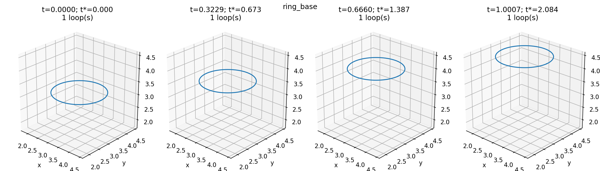
MP4 animation · GIF · Diagnostics PDF · Exact configuration
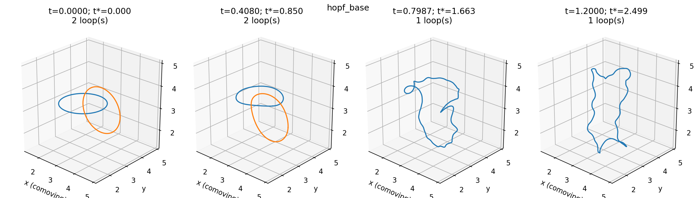
MP4 animation · GIF · Diagnostics PDF · Exact configuration
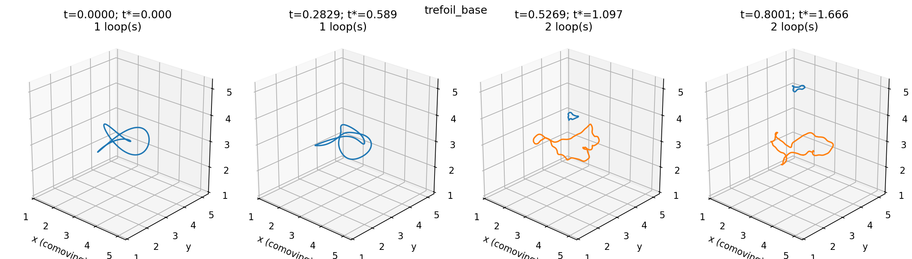